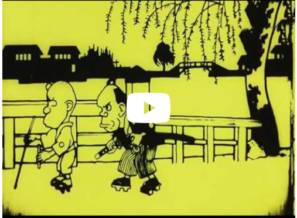
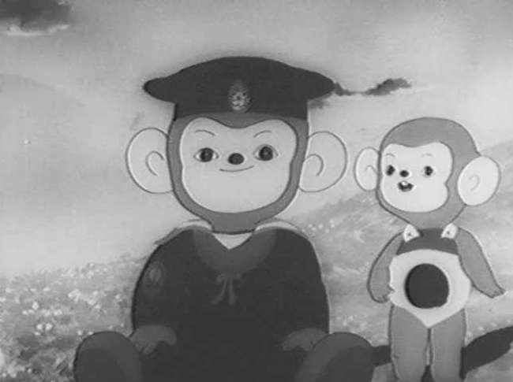
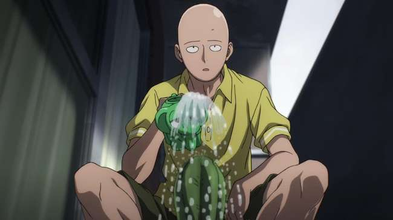
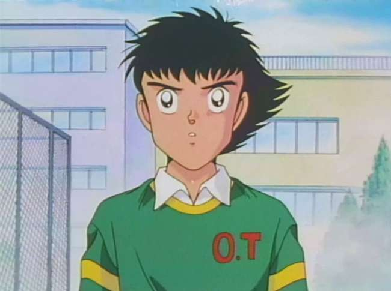
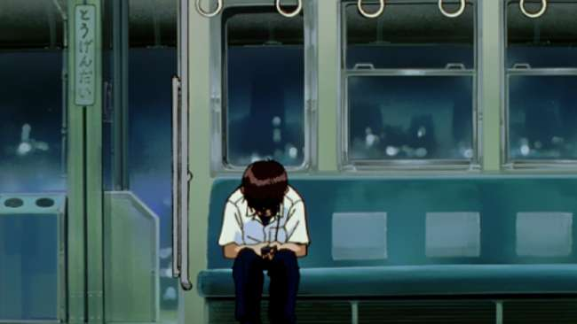
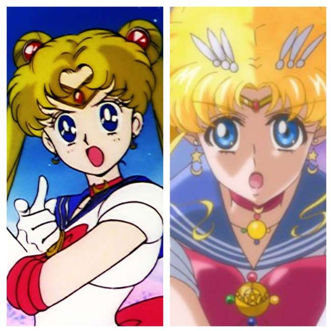

»The Evolution Of Anime«
A memory lane walk down

it first appeared in 1917, anime — or Japanese animation …
The first anime — a short titled Namakura Gatana (The Dull Sword) made by artist Jun'ichi Kōuchi
1963's 'Astro Boy' Was The First Televised Anime
aired on Fuji Television on January 1, 1963.

Disney influenced more than just films
Yes! anime too

One-Punch Man, one of the most popular anime to appear in recent years,
takes its inspiration from a webcomic.

Sports Anime, Mecha Anime, And Other Genres
Established In The 1970s and '80s
Mature And Thought-Provoking Content
… Became Popular In The Late '90s

At first, cutout animation — a form of stop-motion animation typically using flat paper cutouts
In 20th century …

The End
(if you didn't know the history, you are still an anime fan! ;))